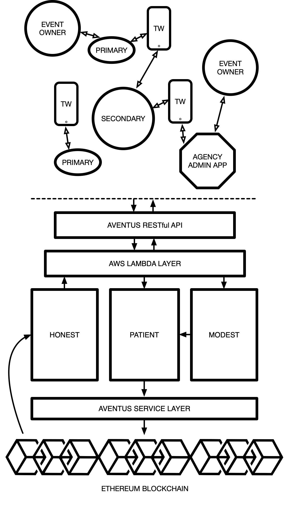

Introduction
Welcome, to your bridge to Blockchain; Artos. We have developed the Aventus Protocol on behalf of the Aventus Foundation.
Below you will find a general architecture diagram outlining our core services and where data is being processed from the point of entry via our API endpoints. Each of these distinct products makes up the Artos ecosystem and we aim to continue to develop these as our implementation matures.

As shown in the above architecture diagram our technology stack is built in layers on top of the blockchain and each product serves a purpose to ensure interaction via our endpoints is standardised and familiar for developers.
Before You Begin
This guide acts as developer reference for integrating with Aventus Protocol RESTful API covering interaction with events and tickets hence any language and instructional information assumes an existing technical knowledge of interacting via an API and the typical practices involved.
By sending HTTPS requests to specific URLs (endpoints) as a registered user you can easily harness the power of the Aventus Protocol allowing us to handle any corresponding complexity with writing and reading the Ethereum blockchain.
An API endpoint contains the URL of the resource that you want to access and the action that you want to complete on that resource. The action is indicated by the HTTP method of the request: GET, POST, PUT, or DELETE.
When you send an API request, the server returns an HTTP response. The HTTP response contains a status code to indicate whether the request succeeded and the details of the response in the response body. Most resources format this response as JavaScript Object Notation (JSON). You can use the JSON packages or libraries that are built in to the programming language that you use to extract the data.
Authentication
All requests to the Aventus APIs go over the web. Essentially this means that any system that can speak to the web, can speak to our APIs. Any and all language specific libraries and SDKs provided are really just wrappers which are providing some convenience and linguistic niceties to help you work with a simple, RESTful API.
Aventus will create an Auth0 login for you to use, and thereafter: the Aventus API requires a header authorisation key/value pair for each request.
To authorize, use this code:
# With shell, you can just pass the correct header with each request
curl "api_endpoint_here"
-H "Authorization: meowmeowmeow"
Make sure to replace
meowmeowmeowwith your API key.
Aventus expects for the API key to be included in all API requests to the server in a header that looks like the following:
Authorization: meowmeowmeow
Getting Started
If this is your first time here, scan this section before digging deeper into the documentation. The sections after this page assume you know the basics about the Aventus Protocol. For further information, read our Whitepaper here or for a shorter read, our Lightpaper is here.
What you can do?
- Create an Event (POST)
- Retrieve Event List (GET)
- Delete Event (DELETE)
- Create Tickets (POST)
- Retrieve Ticket List (GET)
- Cancel Tickets (DELETE)
- Send Ticket Links (POST)
- Generate Doorlist (GET)
The Ecosystem
- Aventus Protocol
- The Aventus Protocol is a global open standard for the exchange of tickets built upon the Ethereum blockchain composed of smart contracts that allow for the creation and validation of events, the issuance, sale and distribution of tickets in primary and secondary ticket markets (under parameters designed and customised by inventory holders and event organisers) and the allocation of defined proportions of ticket sale revenue between event organisers, ticket promoters, artists, secondary resellers, etc.
- Virtue Services
- Patient is a queuing system. A way to manage a large requests that will write to the blockchain. Think of the IMS that sends large amounts of requests to the blockchain, but the blockchain itself is really slow. Patient manages (i.e. queues) the transactions that are being sent to the blockchain. A user of Patient doesn’t need to know how to interact with the protocol as it operates as a high level layer between the protocol and the client. Patient users also don’t need to care about smart contracts, transaction fee’s etc. It auto adjusts the price paid for gas depending on the level of congestion on the blockchain.
- Honest is a public API that allows any kind of application to look up information on the protocol. Anything that resides on the protocol can be seen and consumed by Honest.
- Modest The last, and largest of our virtue services. Modest, as the name suggests, is our scaling solution for the blockchain, but firstly for the Aventus Protocol itself. It utilises Merkle trees to allow much quicker, concurrent processing of objects to the blockchain.
- AWS Lambdas
- We employ the use of AWS Lambdas throughout the technology stack as serverless middleware between services. These aren't distinct services themselves but simply allow for horizontally scalable data processing throughout the system.
- Ticket Wallet
- The Aventus Ticket Wallet is a white-label mobile application acting as the user facing client for loading and viewing tickets issued by the event creator. Originally designed as a proof-of-concept to show our end-to-end solution including access control but is built in a modular fashion to allow third parties to brand their own wallet using our technology under the hood.
Guides
Aventus makes creating and managing events and tickets on the blockchain easy. Find the documentation, sample code, and developer tools you need to build exactly what you want, fast. We’ll handle the complexity of blockchain and the Aventus Protocol. Let’s get building!
Create Event
The first thing we'd recommend you do is create an event. Events are the foundation of any content on the Aventus Protocol and must be in place before tickets can be issued and thus comes first in this guided flow.
Using our Aventus RESTful API, you can create events on the protocol direct from your language of choice. In this guide, we'll explore how you can use the Aventus API to:
- Create a new event
- Set parameters for your event
First, take note of the method, and sample request. In this example guide you'll be creating your new event for 8000 people.
Method: POST
Endpoint: /event/create
Request Headers
Insert Example Headers here
Sample request
The following will create an event with the start date of x
Insert Example Request here
Sample Response
_The following is the expected response for creating an event with the start date of x_2
Insert Example Response here
Query Parameters
| Parameter | Example | Format | Default | Description |
|---|---|---|---|---|
| Description | Kendrick Lamar, Brixton Academy, London, 18+ | String | - | The event info |
| Support URL | www.kendricklamar.com/tour | String | - | Evidence of legitimacy |
| On Sale Time | 21/02/2019 | Date | - | Date ticket sales start |
| Off Sale Time | 31/03/2019 | Date | - | Date ticket sales stop |
| Average Ticket Price | $100 | Integer | - | Average Ticket Price |
| Owner Proof | f4780e2d9f6 | String | - | Proof |
Retrieve Event List
Now that you have created an event you may want to retrieve these details from the protocol in order to keep track of your live events.
Using our Aventus RESTful API, you can query for a list of active events from your language of choice. In this guide, we'll explore how you can use the Aventus API to: - See a list of active events
First, take note of the method, and sample request. In this example guide you'll be retrieving the details of an event recently created.
HTTP Request
GET http://example.com/api/kittens
Query Parameters
| Parameter | Default | Description |
|---|---|---|
| include_cats | false | If set to true, the result will also include cats. |
| available | true | If set to false, the result will include kittens that have already been adopted. |
Delete Event
Now that you have created an event you may want to cancel it if there was an error.
Using our Aventus RESTful API, you can cancel an event you created from your language of choice. In this guide, we'll explore how you can use the Aventus API to: - Cancel an event
First, take note of the method, and sample request. In this example guide you'll be cancelling an event you recently created.
HTTP Request
GET http://example.com/api/kittens
Query Parameters
| Parameter | Default | Description |
|---|---|---|
| include_cats | false | If set to true, the result will also include cats. |
| available | true | If set to false, the result will include kittens that have already been adopted. |
Create Tickets
Now that you have created an event you can now generate and distribute tickets to customers
Using our Aventus RESTful API, you can create new tickets for an event you created from your language of choice. In this guide, we'll explore how you can use the Aventus API to: - Generate new tickets - Distribute tickets via email
First, take note of the method, and sample request. In this example guide you'll be cancelling an event you recently created.
HTTP Request
GET http://example.com/api/kittens
Query Parameters
| Parameter | Default | Description |
|---|---|---|
| include_cats | false | If set to true, the result will also include cats. |
| available | true | If set to false, the result will include kittens that have already been adopted. |
Retrieve Ticket List
Now that you have created an event with tickets you can now retrieve a list of tickets associated with an event and see the status of each ticket
Using our Aventus RESTful API, you can fetch a list of tickets for an event you created from your language of choice. In this guide, we'll explore how you can use the Aventus API to: - Fetch a list of tickets
First, take note of the method, and sample request. In this example guide you'll be cancelling an event you recently created.
HTTP Request
GET http://example.com/api/kittens
Query Parameters
| Parameter | Default | Description |
|---|---|---|
| include_cats | false | If set to true, the result will also include cats. |
| available | true | If set to false, the result will include kittens that have already been adopted. |
Cancel Tickets
Now that you have a list of tickets for an event, you can now perform ticket management and cancel a specific ticket
Using our Aventus RESTful API, you can specify a ticket to cancel from your language of choice. In this guide, we'll explore how you can use the Aventus API to: - Cancel a ticket
First, take note of the method, and sample request. In this example guide you'll be cancelling an event you recently created.
HTTP Request
GET http://example.com/api/kittens
Query Parameters
| Parameter | Default | Description |
|---|---|---|
| include_cats | false | If set to true, the result will also include cats. |
| available | true | If set to false, the result will include kittens that have already been adopted. |
Kittens
Get All Kittens
curl "http://example.com/api/kittens"
-H "Authorization: meowmeowmeow"
The above command returns JSON structured like this:
[
{
"id": 1,
"name": "Fluffums",
"breed": "calico",
"fluffiness": 6,
"cuteness": 7
},
{
"id": 2,
"name": "Max",
"breed": "unknown",
"fluffiness": 5,
"cuteness": 10
}
]
This endpoint retrieves all kittens.
HTTP Request
GET http://example.com/api/kittens
Query Parameters
| Parameter | Default | Description |
|---|---|---|
| include_cats | false | If set to true, the result will also include cats. |
| available | true | If set to false, the result will include kittens that have already been adopted. |
Get a Specific Kitten
curl "http://example.com/api/kittens/2"
-H "Authorization: meowmeowmeow"
The above command returns JSON structured like this:
{
"id": 2,
"name": "Max",
"breed": "unknown",
"fluffiness": 5,
"cuteness": 10
}
This endpoint retrieves a specific kitten.
HTTP Request
GET http://example.com/kittens/<ID>
URL Parameters
| Parameter | Description |
|---|---|
| ID | The ID of the kitten to retrieve |
Delete a Specific Kitten
curl "http://example.com/api/kittens/2"
-X DELETE
-H "Authorization: meowmeowmeow"
The above command returns JSON structured like this:
{
"id": 2,
"deleted" : ":("
}
This endpoint deletes a specific kitten.
HTTP Request
DELETE http://example.com/kittens/<ID>
URL Parameters
| Parameter | Description |
|---|---|
| ID | The ID of the kitten to delete |
Errors
The Aventus RESTful API uses the following error codes:
| HTTP response Code | HTTP error category | Typical Failure Case |
|---|---|---|
| 400 | BAD REQUEST | One of the expected parameters is not present or in an incorrect format |
| 401 | UNAUTHORIZED | Owner Proof does not correspond to an approved member on the protocol |
| 500 | INTERNAL SERVER ERROR | Unexpected internal server error, our services are down |
Glossary
The Glossary of specific names, objects and functions referenced by Artos. Exhaustive.:
A
- Access Control is the method of entry (along with security protocols) to an event (aventus), granted by a ticket
- Activity is a message used to communicate between services of the system. It can take two forms; service events and commands
- Aragon is a platform for building blockchain companies (DAOs) on top of Ethereum. More info
- AvEntity is a catch-all term used internally to refer to challenge-able members on the Protocol
- Aventlink refers to the links produced by the Aventus Link Generator, which creates links that our Ticket Wallet can consume.
- Aventus Community is made up of AVT token holders
- Aventus Protocol is composed of Ethereum smart contracts that allow for the creation and validation of events, the issuance and sale of tickets in primary and secondary ticket markets (customisable by the event organisers), and the distribution of ticket sale revenue and market/event fees between the event organizers, ticket promoters, market matchers, attendees, etc.
- Aventus Registry tracks third parties using the Protocol, events listed, and algorithmic parameters related to fees and time periods
- AVT the token used in the Aventus Protocol, originally reffered to as an AventCoin
B
- Bronze is a new music format built on the blockchain More info
- Business Unit is any kind of client of Aventus (promoters, ticket sellers, etc.)
C
- Challenge (Proposal) The Aventus Community can challenge the legitimacy of an AvEntity on the Protocol by adding a deposit and voting on it using a stake of AVT
- Client see Business Unit
- Command is an activity that asynchronously requests an action from a service. These activities are usually sent directly to the service's queue
- Customer our business unit's clients
D
- DAO (Decentralized Autonomous Organization) aims to hard-code certain company rules allowing an organization to exist without typical top-down hierarchical leadership structure via the blockchain. They rely on smart contracts, or pre-programmed rules that describe what can happen in the defined system. Rules of the DAO can be amended via a governance proposal
- ÐApps (Decentralized Applications) are digital applications or programs that run on the Ethereum blockchain
- Delegate Calls Execute the code of another contract, but with the state (storage) of the calling contract. More info
- Deposit the AVT attached to the creation of a Governance Proposal or Event Challenge
- Deposit Fund the section in the voting wallet ÐApp that supports the initiation of a Governance Proposal or Event Challenges by a member of the Aventus Community. Once a deposit is used against either of these, the price of that deposit becomes locked within the fund until the proposal is complete
E
- ENS is the equivalent of common DNS on the Ethereum network. More info
- ERC20 token standard describes the functions and events (solidity) that an Ethereum token contract has to implement
- Ether is the name of the currency used within Ethereum. It is used to pay for computation within the EVM. This is done indirectly by purchasing gas for ether
- Ethereum is a decentralized platform for applications that run exactly as programmed without any chance of fraud, censorship or third-party interference. More info
- Event (Aventus) is an AFK physical ticketed event (eg. live music, sports game), with an event owner, title, location, date, ticket total and a deposit (for voting)
- Event (Solidity) is an activity that notifies to any listener that something happened on the originating service. This activities are usually published to a topic
- Event Owner the rightsholder of an event (aventus), or more accurately the specific Ethereum address of said rightsholder
- EVM Code is the binary code of Ethereum contracts compiled from Solidity which is then executable by the Ethereum Virtual Machine. More info
G
- Ganache is a Node.js based Ethereum client for testing and development (previously referred to as 'testRPC'). More info
- Gas is the ether execution fee for every operation made on the Ethereum network. More info
- Governance Proposal Aventus Community members can propose governance changes to the algorithmic parameters (Magic Numbers) on the Parameter Registry and vote on whether they are applied using a stake of AVT
H
- Hashing takes an input string of any length and gives out an encrypted output of a deterministic fixed length string. Give it a go here :P
I
- IMS (Inventory Management Service) is a Scala application that can be used as an off-chain central store of inventory
K
- KECCAK-256 is the cryptographic hashing function used within Ethereum
L
- Lambda is an event-driven, serverless computing platform provided by Amazon as a part of the Amazon Web Services (AWS). It is a computing service that runs code in response to events and automatically manages the computing resources required by that code More info
- Libraries in Ethereum are special types of contract which do not store data and cannot hold ether. They are are only required to be deployed once and their functions can then be called by any smart contract via delegate calls. More info
- Lobbying Period is the 2 week time slot at the start of the proposal process where the Aventus Community can externally discuss and debate a Governance Proposal or Event Challenge, followed by the Voting Period
M
- Magic Numbers are the algorithmic parameters stored in the Aventus Registry
- Merkle Tree is a tree constructed by hashing paired binary data (the leaves), then pairing and hashing the results until a single hash remains, which is known as the merkle root. A possible solution for blockchain transaction scaling. Our implementation is our newest virtue service: Modest.
- MetaMask is a browser extension which enables you to interact with the any Ethereum blockchain without having to run a full node. More info
- Migrations in Truffle are Javascript files which help you deploy contracts to the Ethereum network. A history of migrations is recorded on-chain via the Migrations.sol contract. More info
- Modest The name of our Merkle Tree based scaling solution, see above.
- Multi-Signature Wallets are used to safeguard ether or tokens held by an entity. More info
N
- Node is a piece of software that connects to other nodes, thus participating in the formation of the network. A node stores the blockchain, and a node can mine (but doesn't have to) ## O
- Oraclize Blockchain smart contracts cannot access and directly fetch the data they require so an Oracle is a party which provides data. More info ## P
- Partial-lock voting is a token-based voting system where votes are hidden during a voting period before being revealed during the reveal period. As soon as one vote enters the reveal period all committed tokens are locked until all votes have been revealed. More info
- Plasma is a suggested mechanism for managing Ethereum child-chains, which can be used to process transactions off the Ethereum main-chain, in order to provide greater network transaction capacity and speed, and cost reduction. More info
- Private Key In cryptography, a private key (secret key) is a variable that is used with an algorithm to encrypt and decrypt code
- Proxy Library Pattern in Solidity is a means to upgrade Solidity libraries via the use of delegate calls and a library address storage intermediary. More info More detailed info
Q
- Quorum is the minimum number of votes required to be allowed to perform an operation
- Queue is an asynchronous message based communication system that aims to decouple different parts of the platform
R
- Remix is a simple, browser-based, IDE for Solidity development. More info
- Reservation Cancellation is an operation performed when the client wants to remove a ticket reservation. It will invalidate the ticket reservation and return the tickets to the available pool. This should be executed when the client cancels a customer's ticket
Reveal Period is the 1 week time slot following a Voting Period at the end of the proposal process where the Aventus Community can reveal their vote by re-submitting a secret signed vote on a Governance Proposal or Event Challenge. Once all votes have been revealed then the proposal process can be concluded and vote stakes are tallied to decide a winner
Rinkeby is our public test network for the Protocol
S
Sale Channel is an integrated sale point, it will belong to a business unit
Schelling Point is from game theory, a solution people will tend to converge upon in the absence of communication, because it seems natural, special, or relevant to them. More info
Secret is the term used to refer to the unique ticket reference required in the instance when the access control setup of a venue is not integrated with Aventus, meaning they will not perform any processing on the door. Anyone with the secret can gain entry to the venue so it is only known by the primary agent and the buyer of the ticket and not stored openly on the blockchain
Smart Contract is a self-executing contract with the terms of the agreement between buyer and seller being directly written into lines of code. More info
Solidity is a contract-oriented programming language for writing smart contracts that runs on EVM Code. More info
Stake The AVT value stake laid down during voting on a challenge proposal or governance proposal which cannot be amended during a pending vote
Stake Fund is the section in the voting wallet ÐApp that holds AVT stake
T
- Ticket is a unique identifier assigned to the purchaser of a ticket (ticket owner) that allows access to an event (aventus) which will have an allocation (eg. row and seat number) and price properties describing it's transfer conditions
- TicketKey see: Secret
- Ticket Lock is a system entity that will ensure that the best tickets for the selection requested at the time of the ticket reservation will be allocated to the user. A ticket lock does not have a direct link to a particular allocation as that will be determined at the time the ticket reservation is created. It will only ensure that the ticket reservation can be executed at any time before the timeout occurs. This operation will be requested by the client prior to taking the payment
- Ticket Reservation is a system entity that takes a set of tickets permanently out of sale, this operation will be requested by the client after the payment is taken
- Token Curated Registry is a design pattern which provides a means of curating a list (such as a list of non-fraudulent events) via stake-weighted voting. More info
- Topic is a message source to which applications can subscribe their own queues. Messages on a topic will be multicast to all the subscribed queues
V
- Virtues these are referencing our three servies to interact with the protocol: Honest, Patient & Modest.
- Vote the Aventus Community can vote during a challenge proposal or governance proposal by laying down a stake of AVT with their vote choice
- Voting Period is the 1 week time slot following a Lobbying Period during the proposal process where the Aventus Community can submit secret signed votes on a Governance Proposal or Event Challenge
W
- Wei is a base ether denomination, like cents to dollars, equivalent to Bitcoin Satoshis More info